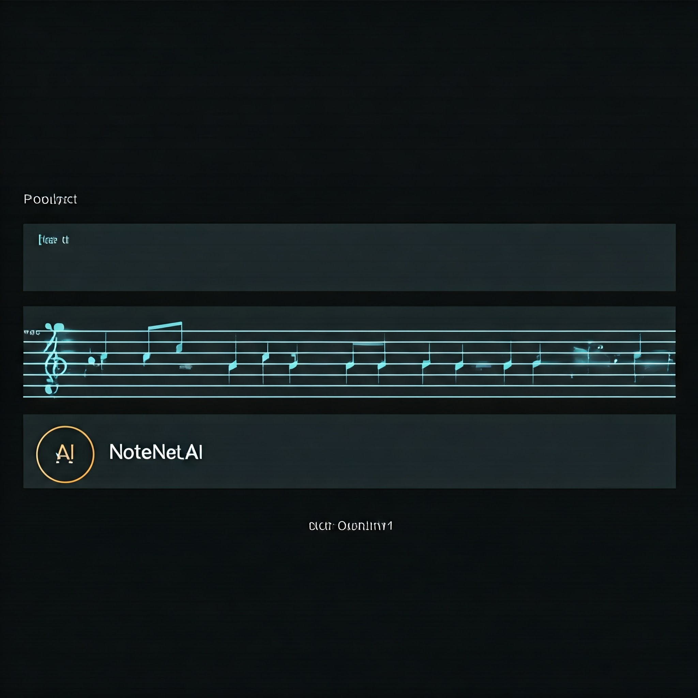
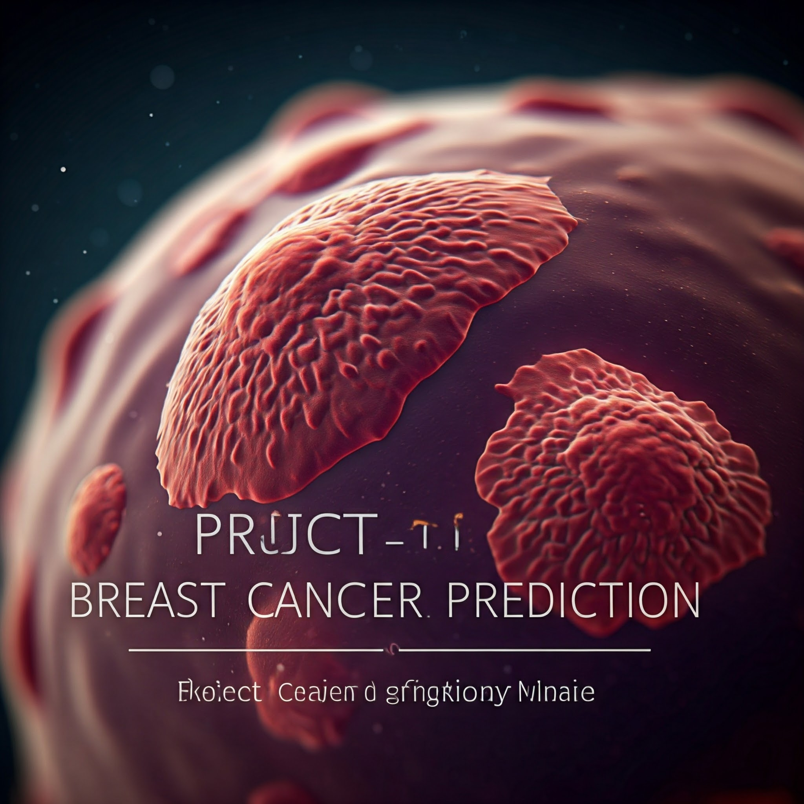

NoteNet.AI
An innovative music generation project utilizing LSTM neural networks to create captivating musical sequences.
💥Tech Used
- TensorFlow
- PyDub
- Mido
- pandas
- Sci-kit Learn
S.C.A.L.E

Python-based project designed to extract and analyze data from Instagram posts, transforming content into structured product listings.
💥Tech Used
- Flask
- InstaLoader
- Cloudinary
- Gemini
I.S.H.A Chatbot
RAG-based AI system developed to provide detailed answers to questions from predefined PDF documents.
💥Tech Used
- LangChain
- Streamlit
- Gemini
- PyPDF
Breast cancer Prediction
ANN-based algorithm designed to predict breast cancer based on symptoms.
💥Tech Used
- Artificial Neural Network algorithm
- available dataset on the internet using TensorFlow
- Sklearn
- Matplotlib